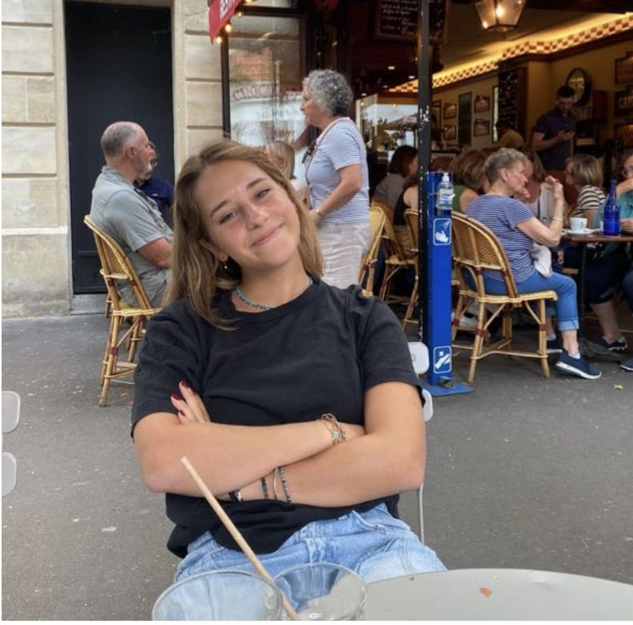
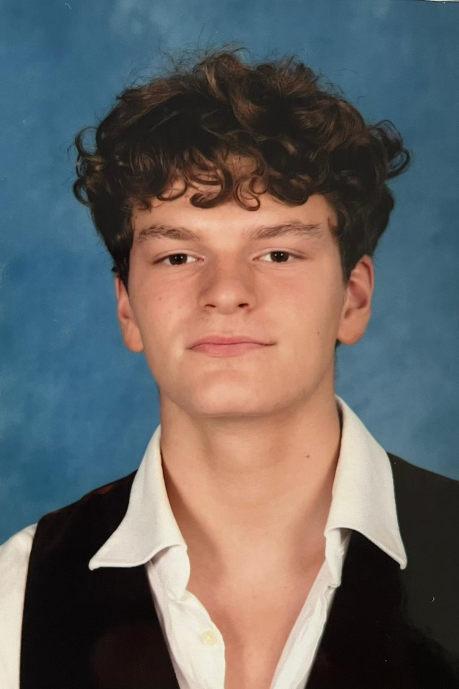

Je m'appelle Julia, j'ai 19 ans et je suis actuellement en première année de CPES DAC à Louis-le-Grand. J'ai réalisé mon lycée à Toulouse et poursuivi les enseignements de spécialité mathématiques, physique-chimie et histoire de l'art. Cette année, je me suis particulièrement investie dans les humanités, avec un intérêt marqué pour la littérature et l’histoire de l’art.
Créer ce site est donc, pour moi, bien plus qu’un simple carnet de bord. C’est une manière de conserver une mémoire vivante de cette année dense, de rassembler les œuvres (textes, films, spectacles) qui m’ont marquée, et surtout de constituer une ressource précieuse et réutilisable sur le long terme.

Ancien élève du lycée Lakanal à Sceaux, je suis actuellement étudiant en première année de CPES DAC. Ayant été particulièrement sensible à la qualité des enseignements en humanités tout au long de mon parcours, j’ai choisi, avec mes camarades, d’en faire le cœur de notre projet de fin d’année. Ce choix reflète notre attachement commun à ces disciplines et à leur place fondamentale dans notre formation.